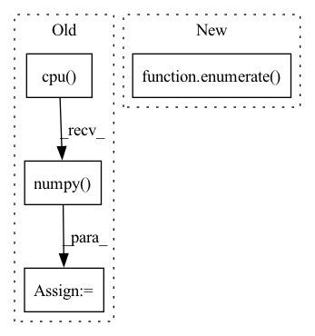

Pattern ID :41588
Before Change
model.eval()
out = model(target_img_tensor)
ps = torch.exp(out)
prediction_percentages = (ps.cpu().numpy() [0]).tolist()
pred = prediction_percentages.index(max(prediction_percentages))
pred_labels.append(pred)
After Change
model.to(device)
target_data_loader = torch.utils.data.DataLoader(target_data_set,batch_size=16,shuffle=False)
for i, (imgs, labels, path) in tqdm(enumerate( target_data_loader) , total=len(target_data_loader)):
imgs = imgs.to(device)
labels = labels.to(device)
true_labels = true_labels+labels.tolist()In pattern: SUPERPATTERN
Frequency: 3
Non-data size: 4
Instances Fragment ID: 116902950
Project Name: radtorch/radtorch
Commit Name: 8122128d39112011e292071d336ed2e52abd8008
Time: 2020-03-01
Author: elbanan@users.noreply.github.com
File Name: radtorch/visutils.py
M Class Name: AnonimousClass
N Class Name: AnonimousClass
M Method Name: show_confusion_matrix(6)
N Method Name: show_confusion_matrix(6)
M Parent Class:
N Parent Class:
M File Name: radtorch/visutils.py
N File Name: radtorch/visutils.py
M Start Line: 312
M End Line: 327
N Start Line: 312
N End Line: 328
Before Change
original_predictions = self._original_predictions
// handle only first image (batch=1)
predictions_in_xyxy_format = original_predictions.xyxy[0].cpu().detach().numpy()
object_prediction_list = []
// process predictionsAfter Change
// handle all predictions
object_prediction_list_per_image = []
for image_ind, image_predictions_in_xyxy_format in enumerate( original_predictions.xyxy) :
shift_amount = shift_amount_list[image_ind]
full_shape = None if full_shape_list is None else full_shape_list[image_ind]
object_prediction_list = [] Fragment ID: 116902956
Project Name: obss/sahi
Commit Name: 248cd2df7d3450eea48c0f03b75d1b7d0111dcf4
Time: 2021-12-19
Author: 34196005+fcakyon@users.noreply.github.com
File Name: sahi/model.py
M Class Name: Yolov5DetectionModel
N Class Name: Yolov5DetectionModel
M Method Name: _create_object_prediction_list_from_original_predictions(3)
N Method Name: _create_object_prediction_list_from_original_predictions(3)
M Parent Class: DetectionModel
N Parent Class: DetectionModel
M File Name: sahi/model.py
N File Name: sahi/model.py
M Start Line: 470
M End Line: 509
N Start Line: 433
N End Line: 484
Before Change
SIR = SIR.transpose(-2, -1)
SAR = SAR.transpose(-2, -1)
SIR_npy = SIR.cpu().detach().numpy()
SDR_out = SDR.new_zeros(b_shape + (n_chan_out,))
SIR_out = SIR.new_zeros(b_shape + (n_chan_out,))
SAR_out = SAR.new_zeros(b_shape + (n_chan_out,))After Change
for m in np.ndindex(b_shape):
dum, p_opt = _linear_sum_assignment_with_inf(loss_mat_npy[m])
loss_out[m] = loss_mat[m + (dum, p_opt)]
for i, arg in enumerate( args) :
args_out[i][m] = arg[m + (dum, p_opt)]
p_opts[m] = p_opt
Fragment ID: 116902953
Project Name: fakufaku/torchiva
Commit Name: d2b2bceef6944715a6274920e6ec7b0374367ccd
Time: 2022-01-31
Author: robin.scheibler@linecorp.com
File Name: torchiva/metrics.py
M Class Name: AnonimousClass
N Class Name: AnonimousClass
M Method Name: _solve_permutation(1)
N Method Name: _solve_permutation(3)
M Parent Class:
N Parent Class:
M File Name: torchiva/metrics.py
N File Name: torchiva/metrics.py
M Start Line: 204
M End Line: 234
N Start Line: 150
N End Line: 182